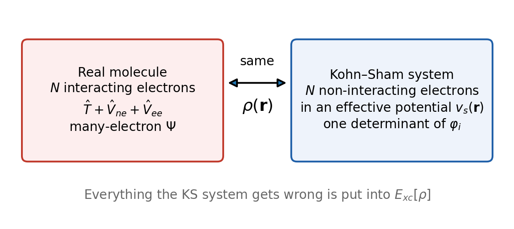

Lecture 5 · Approximating the Hamiltonian II: density functional theory
Why the electron density is enough, the Kohn–Sham trick, and the first approximation
1 Why look beyond the wave function?
The many-electron wave function \(\Psi(\mathbf{x}_1, \ldots, \mathbf{x}_N)\) depends on \(3N\) spatial coordinates (plus \(N\) spin coordinates). For benzene, with 42 electrons, that is a function of 126 variables. Suppose you wanted to store it on a coarse grid of only 10 points per coordinate: you would need \(10^{126}\) numbers, far more than the number of atoms in the observable universe. Walter Kohn called this growth the “exponential wall” of wave-function methods (Kohn 1999).
Correlated wave-function methods avoid storing \(\Psi\) on a grid, but they pay in a different currency: computer time. As you saw in Lecture 4, MP2 scales as \(N^5\) and CCSD(T) as \(N^7\) with system size. CCSD(T) on a molecule with 30 heavy atoms is a major undertaking, and on the 50–100 atoms of a typical catalyst or drug molecule it is out of reach for routine work.
Yet most questions in chemistry are about one simple function: where the electrons are. The electron density \(\rho(\mathbf{r})\) depends on only three coordinates, whatever the number of electrons. Density functional theory (DFT) is the theory that says this function is enough, in principle, to get the exact ground-state energy. In practice it is the method behind most of the quantum chemistry done today, and the method of almost every experiment in this course.
2 The electron density
2.1 Definition and properties
The electron density is the probability of finding any electron at point \(\mathbf{r}\), with any spin, whatever the other electrons are doing:
\[ \rho(\mathbf{r}_1) = N \int \cdots \int \left|\Psi(\mathbf{x}_1, \mathbf{x}_2, \ldots, \mathbf{x}_N)\right|^2 d\omega_1\, d\mathbf{x}_2 \cdots d\mathbf{x}_N. \tag{1}\]
We integrate \(|\Psi|^2\) over the spin of electron 1 and over all coordinates of the other \(N-1\) electrons. The factor \(N\) appears because the electrons are indistinguishable: any of them could be the one at \(\mathbf{r}_1\). Its main properties are:
- It integrates to the number of electrons: \(\int \rho(\mathbf{r})\,d\mathbf{r} = N\).
- It is positive everywhere and decays to zero far from the molecule. The decay is exponential, \(\rho \propto e^{-2\sqrt{2I}\,r}\), where \(I\) is the first ionization energy (in atomic units).
- It has cusps at the nuclei. At each nucleus the density has a sharp peak whose slope is fixed by the nuclear charge (Kato’s cusp condition). So the density “knows” where the nuclei are and what their charges are.
- It is an observable. X-ray diffraction measures the electron density of crystals, and electron-density maps are how crystallographers see molecules.
- For a single determinant (Hartree–Fock or Kohn–Sham), it is simply the sum of the occupied orbital densities: \(\rho(\mathbf{r}) = \sum_{i}^{\mathrm{occ}}|\varphi_i(\mathbf{r})|^2\) (over spin orbitals).
For open-shell systems we also use the spin densities \(\rho_\alpha(\mathbf{r})\) and \(\rho_\beta(\mathbf{r})\), with \(\rho = \rho_\alpha + \rho_\beta\). Their difference, the spin density \(\rho_\alpha - \rho_\beta\), shows where the unpaired electrons are.
2.2 The cusp argument: a hint that the density is enough
Here is an informal argument, due to E. Bright Wilson, that the density should contain everything. From \(\rho\) you can read off \(N\) (integrate it), the positions of the nuclei (the cusps), and their charges (the slope at each cusp). But \(N\), the nuclear positions and the nuclear charges are all you need to write the electronic Hamiltonian (Lecture 1). With the Hamiltonian you can, in principle, solve for \(\Psi\) and everything else. So the ground-state density determines the ground-state wave function. The argument works only for Coulomb potentials. The general proof came in 1964.
3 The Hohenberg–Kohn theorems
In the electronic Hamiltonian, the only part that depends on the molecule is the attraction to the nuclei. We collect it in the external potential \(v_{\mathrm{ext}}(\mathbf{r}) = -\sum_A Z_A/|\mathbf{r} - \mathbf{R}_A|\). The kinetic energy \(\hat T\) and the electron–electron repulsion \(\hat V_{ee}\) are the same for every molecule with \(N\) electrons. In 1964 Pierre Hohenberg and Walter Kohn proved two theorems about this situation (Hohenberg and Kohn 1964).
First theorem (existence). The ground-state density determines the external potential, up to an additive constant. Since \(v_{\mathrm{ext}}\) and \(N\) fix the Hamiltonian, the density determines the Hamiltonian, and therefore the ground-state wave function, the energy, and every other ground-state property.
The proof is short. Suppose two different external potentials \(v\) and \(v'\) (with Hamiltonians \(\hat H\) and \(\hat H'\), and nondegenerate ground states \(\Psi\) and \(\Psi'\)) gave the same ground-state density \(\rho\). Use \(\Psi'\) as a trial function for \(\hat H\). By the variational principle,
\[ E_0 < \langle\Psi'|\hat H|\Psi'\rangle = \langle\Psi'|\hat H'|\Psi'\rangle + \langle\Psi'|\hat H - \hat H'|\Psi'\rangle = E_0' + \int \left[v(\mathbf{r}) - v'(\mathbf{r})\right]\rho(\mathbf{r})\,d\mathbf{r}. \]
Swapping the roles of the two systems gives \(E_0' < E_0 + \int [v' - v]\rho\,d\mathbf{r}\). Adding the two inequalities gives \(E_0 + E_0' < E_0' + E_0\), which is impossible. So two different potentials cannot give the same ground-state density.
Second theorem (variational principle). The ground-state energy is a functional of the density,
\[ E_v[\rho] = F[\rho] + \int v_{\mathrm{ext}}(\mathbf{r})\,\rho(\mathbf{r})\,d\mathbf{r}, \tag{2}\]
and it is minimized by the exact ground-state density. For any trial density \(\tilde\rho\) that is positive and integrates to \(N\) (with some technical conditions), \(E_v[\tilde\rho] \ge E_0\).
A functional is a rule that takes a whole function and returns a number, just as \(E[\Psi] = \langle\Psi|\hat H|\Psi\rangle\) takes a wave function and returns an energy. We write functionals with square brackets.
The term \(F[\rho] = T[\rho] + V_{ee}[\rho]\) is the universal functional: the kinetic and electron–electron energy of the electrons. “Universal” means it is the same for every atom, molecule or solid. Only \(v_{\mathrm{ext}}\) changes from one system to another. Levy later gave a cleaner definition that removes most of the technical conditions: \(F[\rho]\) is the lowest value of \(\langle\Psi|\hat T + \hat V_{ee}|\Psi\rangle\) over all wave functions that give the density \(\rho\) (Levy 1979).
The Hohenberg–Kohn theorems are existence proofs. They say that \(F[\rho]\) exists, not what it is. Nobody knows the exact \(F[\rho]\), and it is very likely that nobody ever will, in a form that is cheap to evaluate. All of practical DFT is about approximating it. The theorems are about the ground state: excited states need extensions (time-dependent DFT), which we do not cover. And “DFT is exact” is true only for the exact functional. Every calculation you will run uses an approximation.
4 A cautionary tale: Thomas–Fermi theory
The idea of using only the density is older than the theorems. In 1927, Thomas (Thomas 1927) and Fermi (Fermi 1927) wrote the energy of an atom as a functional of the density alone. They took the electrostatic terms exactly,
\[ E_{ne}[\rho] = \int v_{\mathrm{ext}}(\mathbf{r})\,\rho(\mathbf{r})\,d\mathbf{r}, \qquad J[\rho] = \frac{1}{2}\iint \frac{\rho(\mathbf{r})\,\rho(\mathbf{r}')}{|\mathbf{r} - \mathbf{r}'|}\,d\mathbf{r}\,d\mathbf{r}', \tag{3}\]
and approximated the kinetic energy by that of a uniform electron gas (electrons in a box with a uniform positive background) evaluated at the local density:
\[ T_{\mathrm{TF}}[\rho] = C_F \int \rho(\mathbf{r})^{5/3}\,d\mathbf{r}, \qquad C_F = \frac{3}{10}\left(3\pi^2\right)^{2/3} \approx 2.871. \]
\(J[\rho]\) is the Hartree energy: the classical self-repulsion of the charge cloud \(\rho\). It is the same as \(\frac{1}{2}\sum_{ij}J_{ij}\) of Lecture 4, including the unphysical \(i = j\) terms. Dirac soon added an exchange term of the same local form (Dirac 1930), which we will meet again below.
Thomas–Fermi theory gives rough total energies of heavy atoms, but it fails for chemistry in a spectacular way: it has no shell structure (the density decreases smoothly from the nucleus, with no K, L, M shells), and Teller proved in 1962 that no molecule is bound in Thomas–Fermi theory (Teller 1962). Any molecule is always higher in energy than its separated atoms. The culprit is the kinetic energy. It is the largest energy term after the nuclear attraction, and the local formula above misses most of the subtle changes in kinetic energy that make chemical bonds. Orbital-free kinetic-energy functionals are still an active research topic, but they are not accurate enough for chemistry.
The lesson for what follows: do not approximate the kinetic energy with a simple density functional.
5 The Kohn–Sham scheme
5.1 A fictitious system with the real density
In 1965, Kohn and Lu Jeu Sham found a way around the kinetic-energy problem (Kohn and Sham 1965). The idea is to bring orbitals back, but only as a tool.
Imagine a fictitious system of \(N\) non-interacting electrons moving in some effective local potential \(v_s(\mathbf{r})\), chosen so that the density of this fictitious system is exactly equal to the density of the real, interacting molecule (Figure 1). A system of non-interacting electrons is easy: its exact wave function is a single Slater determinant of orbitals \(\varphi_i\), each obeying a one-electron Schrödinger equation. And its kinetic energy can be computed exactly from the orbitals:
\[ T_s[\rho] = \sum_{i=1}^{N}\left\langle\varphi_i\left|-\frac{1}{2}\nabla^2\right|\varphi_i\right\rangle. \tag{4}\]
\(T_s\) is not the true kinetic energy \(T\) of the interacting electrons, but it is close: typically it accounts for all but about 1% of it. It also contains the shell structure that Thomas–Fermi theory misses, because it is computed from orbitals.

5.2 The Kohn–Sham energy decomposition
Kohn and Sham then rewrote the exact energy functional (Equation 2) by separating out the pieces we know how to compute:
\[ E[\rho] = T_s[\rho] + \int v_{\mathrm{ext}}(\mathbf{r})\,\rho(\mathbf{r})\,d\mathbf{r} + J[\rho] + E_{xc}[\rho]. \tag{5}\]
The four terms are:
| Term | Name | What it is | Known exactly? |
|---|---|---|---|
| \(T_s[\rho]\) | non-interacting kinetic energy | Equation 4, from the KS orbitals | yes |
| \(E_{ne}[\rho] = \int v_{\mathrm{ext}}\rho\) | electron–nuclear attraction | classical attraction of \(\rho\) to the nuclei | yes |
| \(J[\rho]\) | Hartree (Coulomb) energy | classical self-repulsion of \(\rho\) (Equation 3) | yes |
| \(E_{xc}[\rho]\) | exchange–correlation energy | everything else | no |
The exchange–correlation energy is defined as whatever is needed to make Equation 5 exact. Comparing with \(F[\rho] = T[\rho] + V_{ee}[\rho]\):
\[ E_{xc}[\rho] = \Big(T[\rho] - T_s[\rho]\Big) + \Big(V_{ee}[\rho] - J[\rho]\Big). \tag{6}\]
So \(E_{xc}\) collects three things:
- Exchange: the Pauli-principle correction to the classical repulsion (the \(-K\) terms of Hartree–Fock), including the cancellation of the self-interaction contained in \(J[\rho]\).
- Correlation: the extra lowering of the repulsion because electrons avoid each other dynamically.
- The kinetic correlation energy \(T - T_s\): the difference between the true kinetic energy of interacting electrons and that of the non-interacting reference.
It is customary to split \(E_{xc} = E_x + E_c\). The exchange part is defined as the Hartree–Fock-like exchange energy evaluated with the Kohn–Sham orbitals; everything else is correlation. Exchange is by far the larger piece. For the helium atom, \(E_x \approx -1.03\) Eh and \(E_c \approx -0.042\) Eh. For the hydrogen atom, with a single electron, \(E_x = -J = -0.3125\) Eh and \(E_c = 0\) exactly. Although it is a modest fraction of the total energy (about 10% for the neon atom, and less for heavier atoms), \(E_{xc}\) is the “glue” that holds molecules together. Without it, as in Hartree’s original method, chemical bonding is very poorly described.
5.3 The Kohn–Sham equations
Minimizing Equation 5 with respect to the orbitals, under the constraint that they stay orthonormal, gives the Kohn–Sham equations:
\[ \left[-\frac{1}{2}\nabla^2 + v_{\mathrm{ext}}(\mathbf{r}) + v_J(\mathbf{r}) + v_{xc}(\mathbf{r})\right]\varphi_i(\mathbf{r}) = \varepsilon_i\,\varphi_i(\mathbf{r}). \tag{7}\]
The operator in brackets is the Kohn–Sham operator. Its potential \(v_s = v_{\mathrm{ext}} + v_J + v_{xc}\) has three parts:
- \(v_{\mathrm{ext}}\), the attraction to the nuclei;
- the Hartree potential \(v_J(\mathbf{r}) = \int \rho(\mathbf{r}')/|\mathbf{r} - \mathbf{r}'|\,d\mathbf{r}'\), the electrostatic potential of the whole electron cloud (the same as \(\sum_j \hat J_j\) in Hartree–Fock);
- the exchange–correlation potential \(v_{xc}(\mathbf{r}) = \delta E_{xc}/\delta\rho(\mathbf{r})\), the functional derivative of \(E_{xc}\). For the approximations of this chapter, it is simply a function of \(\mathbf{r}\) computed from the density at (and near) that point.
For an ordinary function \(f(x)\), the derivative tells you how much \(f\) changes when you change \(x\) a little. For a functional \(E[\rho]\), the functional derivative \(\delta E/\delta\rho(\mathbf{r})\) tells you how much \(E\) changes when you add a tiny bit of density at the point \(\mathbf{r}\). It is therefore itself a function of \(\mathbf{r}\): a potential. For a functional of the simple local form \(E[\rho] = \int g(\rho(\mathbf{r}))\,d\mathbf{r}\), the functional derivative is just the ordinary derivative of the integrand, \(\delta E/\delta\rho(\mathbf{r}) = g'(\rho(\mathbf{r}))\). For example, the LDA exchange energy introduced below, \(E_x = -C_x\int\rho^{4/3}\,d\mathbf{r}\), gives the exchange potential \(v_x(\mathbf{r}) = -\tfrac{4}{3}C_x\,\rho(\mathbf{r})^{1/3}\). The Hartree energy \(J[\rho]\) gives the Hartree potential \(v_J\) in the same way. This is how every term of the energy produces a term of the Kohn–Sham potential.
Compare Equation 7 with the Hartree–Fock equations of Lecture 4:
| Hartree–Fock | Kohn–Sham DFT | |
|---|---|---|
| Wave function | one Slater determinant, an approximation to \(\Psi\) | one Slater determinant of a fictitious system; only its density is “real” |
| One-electron operator | \(\hat h + \sum_j(\hat J_j - \hat K_j)\) | \(\hat h + v_J + v_{xc}\) |
| Exchange | exact, nonlocal (\(\hat K\)) | approximate, inside the local \(v_{xc}\) |
| Correlation | none | approximate, inside \(v_{xc}\) |
| Exact if… | never (misses \(E_{\mathrm{corr}}\)) | the exact \(E_{xc}\) were known |
| Equations in a basis | \(\mathbf{FC} = \mathbf{SC}\boldsymbol\varepsilon\) | \(\mathbf{FC} = \mathbf{SC}\boldsymbol\varepsilon\), with \(F_{\mu\nu} = H^{\mathrm{core}}_{\mu\nu} + J_{\mu\nu} + V^{xc}_{\mu\nu}\) |
| Solved by | SCF loop | the same SCF loop |
The two methods share almost all of their machinery. Kohn–Sham DFT expands the orbitals in the same basis sets, builds a Fock-like matrix, and solves the same generalized eigenvalue problem by the same SCF loop, with the same DIIS acceleration. That is why the SCF table of a DFT job in Q-Chem looks exactly like that of an HF job: cycle number, energy, DIIS error, and “Convergence criterion met” at the end. Everything you learned about convergence in Lecture 4 applies unchanged.
As in Hartree–Fock, the Kohn–Sham total energy is not the sum of the occupied orbital energies. Each \(\varepsilon_i\) contains the full Hartree potential and the full exchange–correlation potential felt by electron \(i\). Summing them counts the electron–electron repulsion twice, and it uses \(\int v_{xc}\rho\) in place of \(E_{xc}\), which are different numbers. Programs therefore compute the energy from Equation 5 directly, with the density of the last SCF cycle. The number to use in your reaction energies is always the total energy printed at the end of the SCF (“Total energy in the final basis set”, see the guide on reading the output).
Kohn–Sham DFT is exact in principle: with the exact exchange–correlation functional, it would give the exact ground-state energy and density with the cost of a mean-field calculation. All the difficulty, and all the variety among the hundreds of functionals you will meet, is in approximating \(E_{xc}[\rho]\).
Strictly speaking, the KS orbitals and their energies belong to the fictitious non-interacting system. Only the density, and the total energy, are guaranteed to be physical. In practice, KS orbitals look very similar to Hartree–Fock orbitals, and chemists use them in the same way (MO diagrams, HOMO–LUMO pictures in IQmol). For the exact functional, \(-\varepsilon_{\mathrm{HOMO}}\) equals the first ionization energy exactly. With the approximate functionals of this chapter and the next, \(-\varepsilon_{\mathrm{HOMO}}\) is usually several eV smaller than the ionization energy, so Koopmans-style estimates work worse in DFT than in HF. The reason is the self-interaction error discussed in Section 8.
6 The first approximation: the local spin-density approximation
6.1 The uniform electron gas
To use Kohn–Sham DFT we need an approximate \(E_{xc}[\rho]\). The first and simplest approximation, already proposed by Kohn and Sham in 1965, uses the one system for which the exchange–correlation energy is accurately known: the uniform electron gas (also called jellium). It is an infinite system of electrons with constant density \(\rho\), neutralized by a uniform positive background. Its exchange–correlation energy per electron, \(\varepsilon_{xc}^{\mathrm{unif}}(\rho)\), depends only on the value of \(\rho\).
The local density approximation (LDA) treats every small volume element of a molecule as if it were a piece of uniform gas with the local density \(\rho(\mathbf{r})\), and adds up the contributions:
\[ E_{xc}^{\mathrm{LDA}}[\rho] = \int \rho(\mathbf{r})\,\varepsilon_{xc}^{\mathrm{unif}}\big(\rho(\mathbf{r})\big)\,d\mathbf{r}. \tag{8}\]
For molecules we always use the spin-resolved version, the local spin-density approximation (LSDA), in which \(\varepsilon_{xc}^{\mathrm{unif}}\) depends on both spin densities \(\rho_\alpha\) and \(\rho_\beta\). LSDA is the first rung of Jacob’s ladder (Lecture 6).
6.2 LSDA exchange
For the uniform gas, the exchange energy can be computed analytically from plane-wave orbitals (Dirac, 1930 (Dirac 1930)). The result is
\[ E_x^{\mathrm{LDA}}[\rho] = -C_x\int\rho(\mathbf{r})^{4/3}\,d\mathbf{r}, \qquad C_x = \frac{3}{4}\left(\frac{3}{\pi}\right)^{1/3} \approx 0.7386. \tag{9}\]
In spin-polarized form, exchange acts only between same-spin electrons, and each spin contributes separately:
\[ E_x^{\mathrm{LSDA}}[\rho_\alpha,\rho_\beta] = -\frac{3}{2}\left(\frac{3}{4\pi}\right)^{1/3}\sum_{\sigma=\alpha,\beta}\int\rho_\sigma(\mathbf{r})^{4/3}\,d\mathbf{r}. \tag{10}\]
For a closed shell (\(\rho_\alpha = \rho_\beta = \rho/2\)), Equation 10 reduces to Equation 9. Notice the power \(4/3\). You can check it by dimensional analysis: an energy in atomic units has dimension 1/length, a density 1/length³, and \(\rho^{4/3}\,d\mathbf{r}\) has dimension \((1/\text{length})^4 \times \text{length}^3 = 1/\text{length}\).
In 1951 Slater arrived at the same \(\rho^{4/3}\) form independently, by approximating the Hartree–Fock exchange potential (Slater 1951). His constant was \(3/2\) times larger. Programs later introduced the \(X\alpha\) method, with an adjustable prefactor \(\alpha\): Slater’s value is \(\alpha = 1\), and the uniform-gas (Kohn–Sham) value is \(\alpha = 2/3\). Today, “Slater exchange” in a functional name (the “S” in SVWN or SPW92) means Equation 10 with the uniform-gas constant.
6.3 LSDA correlation
The correlation energy of the uniform gas has no closed form. It is known analytically only in the limits of very high and very low density. In 1980, Ceperley and Alder computed it accurately at intermediate densities with quantum Monte Carlo simulations (Ceperley and Alder 1980). Others then fitted analytic formulas that reproduce the Monte Carlo numbers and the known limits, as functions of the Wigner–Seitz radius \(r_s = (3/4\pi\rho)^{1/3}\) (the radius of a sphere that contains, on average, one electron) and of the spin polarization \(\zeta = (\rho_\alpha - \rho_\beta)/\rho\). The two parametrizations you will see are:
- VWN (Vosko, Wilk and Nusair, 1980) (Vosko et al. 1980), which comes in several variants (the paper gives more than one fit). Different programs use different VWN variants inside the same named functional, which is one reason why “the same” functional can give slightly different energies in different codes.
- PW92 (Perdew and Wang, 1992) (Perdew and Wang 1992), a later and more careful fit.
In this course, LSDA means SPW92: Slater exchange plus PW92 correlation. Its close relative SVWN5 (Slater plus VWN correlation, form V) gives very similar results. Both are “pure” LSDA: they use nothing but the local spin densities.
The hydrogen atom is a good test because we know the exact answer. Its exact density is \(\rho(r) = e^{-2r}/\pi\), fully spin polarized (\(\rho_\alpha = \rho\), \(\rho_\beta = 0\)). The exact energy terms are \(T = 0.5\), \(E_{ne} = -1\) Eh and, since there is only one electron, \(V_{ee} = 0\). In Kohn–Sham language, \(J[\rho] = 5/16 = 0.3125\) Eh, so the exact \(E_{xc}\) must be \(-0.3125\) Eh: \(E_x = -0.3125\) Eh cancels the self-repulsion exactly, and \(E_c = 0\).
Evaluate the LSDA terms with the exact density (computed with the script in images/src/l04_l06_figures.py):
| Exact | LSDA (SPW92) | |
|---|---|---|
| \(E_x\) (Eh) | \(-0.3125\) | \(-0.268\) |
| \(E_c\) (Eh) | \(0\) | \(-0.022\) |
| \(J + E_{xc}\) (Eh) | \(0\) | \(+0.022\) |
| Total energy (Eh) | \(-0.500\) | \(-0.478\) |
LSDA exchange recovers only 86% of the exchange energy needed to cancel the self-repulsion, and LSDA correlation adds a spurious correlation energy to a system with one electron. The net result is an electron that repels itself by 0.022 Eh (14 kcal/mol). This is the self-interaction error in its simplest form. In Hartree–Fock this error is exactly zero (Lecture 4).
6.4 What LSDA gets right, and what it gets wrong
It is surprising that a model built on a uniform gas works at all for molecules, where the density varies by orders of magnitude between the nuclei and the tails. It works better than it should, for a deep reason: the exchange–correlation hole of the uniform gas obeys the same exact sum rules as the true hole (it contains exactly one electron, removed from around each electron), and the energy depends only on a spherical average of the hole. Errors in exchange and in correlation also partly cancel.
What LSDA does well:
- Geometries: bond lengths are usually within a few hundredths of an ångström (often slightly too short), and bond angles are good.
- Vibrational frequencies of reasonable quality, and good properties of simple metals and many solids, which is why LSDA was the workhorse of solid-state physics for decades.
What LSDA does badly:
- Overbinding. Atomization energies are much too large, typically by tens of kcal/mol for small molecules, and the error grows with molecular size. Bond energies, hydrogen bonds and weak complexes are all too strong.
- Barrier heights are too low, often far too low.
- Ionization energies from orbital energies are much too small, and anions are often not bound.
These errors are the reason LSDA was never popular in chemistry. Chemists started to use DFT only after the gradient corrections of the late 1980s and the hybrids of 1993 (the subject of Lecture 6). In Experiment 3 you will compute SPW92 alongside fifteen other methods and see where it stands.
7 How a DFT program evaluates \(E_{xc}\): the integration grid
In Hartree–Fock, every integral in the energy is a product of Gaussian basis functions that can be done analytically. In DFT, the terms \(T_s\), \(E_{ne}\) and \(J\) are computed in the same way. But \(E_{xc}\) is not. Integrals like \(\int\rho^{4/3}\,d\mathbf{r}\), and the more complicated ones of the next chapter, have no analytic solution for a density built from Gaussians. Programs compute them numerically, as a weighted sum over a grid of points placed around each atom:
\[ E_{xc} \approx \sum_{k} w_k\, \rho(\mathbf{r}_k)\,\varepsilon_{xc}\big(\rho(\mathbf{r}_k), \ldots\big). \]
The grid is an extra approximation that Hartree–Fock does not have. A grid that is too coarse gives energies with numerical noise, which can be larger than you expect. You will meet grids in detail in Lecture 11 and test them in Experiment 7. For now, remember that the grid is the second reason, after the choice of \(E_{xc}\), why two DFT calculations with “the same” functional and basis can disagree.
One more preview. Nothing forces \(E_{xc}\) to be a pure density functional. Hybrid functionals replace part of the approximate exchange by exact (Hartree–Fock) exchange, computed from the Kohn–Sham orbitals with the \(\hat K\) operator of Lecture 4. This partly cures the self-interaction error. Hybrids are the fourth rung of Jacob’s ladder, in Lecture 6.
8 Known errors of approximate functionals
Every functional you will use in this course is an approximation, and approximations fail in characteristic ways. Three of them are worth knowing by name from the start. Each returns in later classes, with experiments designed to expose it.
1. Self-interaction and delocalization error. In approximate functionals, the approximate \(E_x\) does not exactly cancel the self-repulsion contained in \(J[\rho]\) (as in the hydrogen atom above). Perdew and Zunger made this precise in 1981 and proposed a correction (Perdew and Zunger 1981). Because an electron that repels itself prefers to be spread out, approximate functionals systematically over-stabilize delocalized charge. This is called delocalization error (Cohen et al. 2012). Its symptoms are striking. In stretched H₂⁺, a one-electron system, LSDA and GGAs predict an energy far too low, with the electron shared between two distant protons. Reaction barriers come out too low, because transition states have stretched, delocalized bonds. Charge-transfer complexes are overbound, and orbital energies are too high. Mixing in Hartree–Fock exchange, which has no self-interaction, reduces this error (Lecture 6). It returns in Lecture 9.
2. Missing long-range dispersion. LSDA depends only on the density at each point. GGAs and meta-GGAs (Lecture 6) also look at its derivatives at that point, but still only locally. Dispersion, however, is a correlation between density fluctuations at two points that can be far apart, on two molecules whose densities do not overlap. A local or semilocal functional cannot see it: as two argon atoms are pulled apart, the energy of any such functional approaches the separated-atom value too quickly. The functional may give some spurious binding where the densities overlap (LSDA often does), but for the wrong reason. Dispersion must be added, by an empirical correction like -D4 (Caldeweyher et al. 2017, 2019) or by a nonlocal correlation functional (VV10) (Vydrov and Van Voorhis 2010). This is the subject of Lecture 8 and Experiment 4.
3. Static correlation. The Kohn–Sham reference is a single determinant. When the true wave function needs two or more determinants with similar weights (stretched bonds, diradicals, ozone, many transition-metal compounds), approximate functionals struggle. In principle the exact \(E_{xc}\) would handle it. In practice, approximate functionals do it badly or not at all, and often the unrestricted calculation breaks spin symmetry, just as UHF does for stretched H₂ (Lecture 4). Static correlation and self-interaction are related, and they pull in opposite directions: adding Hartree–Fock exchange reduces self-interaction error but makes static-correlation problems worse. This tension is one reason why no single functional is best for everything. It returns in Lecture 9 and Lecture 12.
Approximate DFT includes approximate exchange and correlation. For most chemistry it is far better than HF. But it can also be worse, and in ways that HF is not: HF has no self-interaction error, so for some properties dominated by that error (for example, the dissociation of one-electron bonds) HF is qualitatively right and LSDA or GGA functionals are qualitatively wrong. Always ask which errors your problem is sensitive to.
Key points
- The electron density \(\rho(\mathbf{r})\) depends on 3 coordinates, while the wave function depends on \(3N\). It integrates to \(N\), has cusps at the nuclei, and is measurable.
- Hohenberg–Kohn (1964): the ground-state density determines the external potential and therefore everything; the energy is a functional of the density, minimized by the true density. The theorems prove existence but do not give the functional.
- Thomas–Fermi theory approximates the kinetic energy as a local density functional and binds no molecules. Lesson: don’t approximate \(T\) that way.
- Kohn–Sham (1965): a fictitious non-interacting system with the same density. Its kinetic energy \(T_s\) is computed exactly from orbitals. \(E[\rho] = T_s + E_{ne} + J + E_{xc}\).
- \(E_{xc}\) contains exchange, correlation, and the kinetic correction \(T - T_s\). It is the only unknown term, and KS-DFT would be exact with the exact \(E_{xc}\).
- The KS equations look like the HF equations, with the exchange operator replaced by a local potential \(v_{xc}\). They are solved by the same SCF machinery, and the output looks the same.
- LSDA takes \(E_{xc}\) from the uniform electron gas: exchange \(\propto\rho^{4/3}\) (Dirac/Slater), correlation from quantum Monte Carlo data fitted by VWN or PW92. SPW92 is the LSDA of this course.
- LSDA gives good geometries but overbinds: atomization energies far too large, barriers too low.
- \(E_{xc}\) is evaluated numerically on a grid (Lecture 11).
- Three error types to remember: self-interaction/delocalization error, missing dispersion, and static correlation.
Study questions
- How many spatial coordinates does the wave function of a water molecule depend on? And its electron density? Why does this matter for the cost of a calculation?
- State the first Hohenberg–Kohn theorem in your own words. Then reproduce the proof by contradiction for a nondegenerate ground state.
- What is a functional? Give two examples from this chapter or from Lecture 4, and say what each takes as input and what it returns.
- Thomas–Fermi theory and Kohn–Sham DFT both write the energy as a functional of the density. What is the key difference that makes Kohn–Sham useful for chemistry while Thomas–Fermi binds no molecules?
- Write the Kohn–Sham energy decomposition, name each term, and say which terms are computed exactly. List the three physical effects collected in \(E_{xc}\).
- Compare the Hartree–Fock and Kohn–Sham one-electron operators term by term. Which term is nonlocal in HF and local in LSDA?
- Show that Equation 10 reduces to Equation 9 for a closed-shell density. Then use dimensional analysis to explain why exchange in the LDA must scale as \(\rho^{4/3}\).
- For the hydrogen atom, the exact exchange–correlation energy must equal \(-J[\rho]\). Explain why, and use the worked-example numbers to compute the self-interaction error of LSDA in kcal/mol.
- A DFT calculation and an HF calculation on the same molecule with the same basis set both print an SCF table. Name two numerical approximations that are present in the DFT job but absent from the HF job.
- Name the three main error types of approximate functionals. For each, give one chemical situation where you would expect it to matter.
Further reading
- Koch and Holthausen (2001), chapters 3–6: the standard introduction to DFT for chemists, from Hohenberg–Kohn to the LSDA and beyond. Written for exactly the audience of this course.
- Kohn (1999): Walter Kohn’s Nobel lecture, an elegant and readable account of why the density is enough.
- Burke (2012): a short perspective on what DFT is, what it is not, and where approximations come from.
- Parr and Yang (1989): the classic, more mathematical textbook.
- Cohen et al. (2012): a review of the main errors of approximate functionals (self-interaction, delocalization, static correlation), for after Lecture 9.
- Peverati and Truhlar (2014) and Mardirossian and Head-Gordon (2017): reviews of modern functionals, useful for Experiment 2.